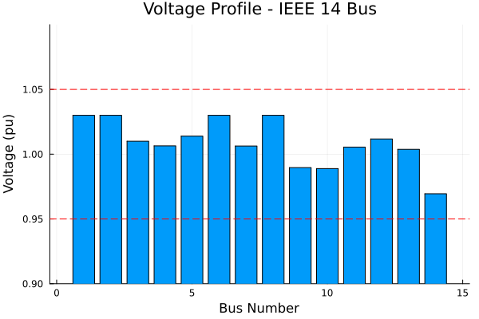
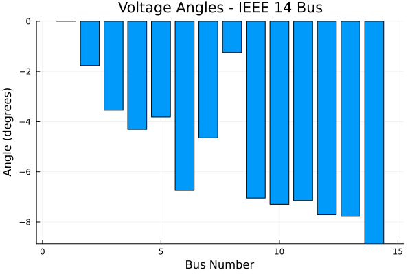
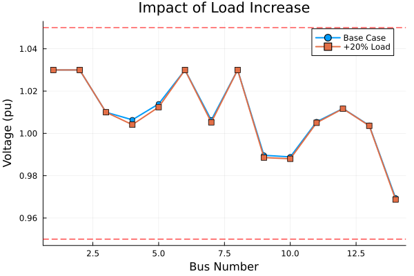

Getting Started with Powerful.jl
Interactive walkthrough of the basic power flow workflow. See Getting Started Guide for detailed explanations.
Setup
using Powerful
using Powerful.PowerFlowData
using Plots
using DataFrames1. Load System and Solve
Load IEEE 14-bus test case
case = PowerFlowData.parse_network(joinpath(pkgdir(Powerful), "cases", "ieee14.raw"))
sys = SystemModel(case)SystemModel{Vector}:
Components:
PV: 4 elements
Owner: 2 elements
Branch: 16 elements
AreaInterchange: 2 elements
Transformer2W: 4 elements
Bus: 14 elements
PQ: 11 elements
Slack: 1 elements
Zone: 2 elementsCreate and solve problem
prob = ACPowerFlowProblem(sys)
sol = solve(prob, NewtonRaphson())PowerFlowSolution{Float64}:
Converged: true
Iterations: 4
Residual: 3.25e-12
Variables: 282. Convergence Check
println("Converged: ", sol.converged)
println("Iterations: ", sol.iterations)
println("Final residual: ", sol.residual_norm)Converged: true
Iterations: 4
Final residual: 3.2540081740251026e-123. System Summary
println("System composition:")
for (model, data) in pairs(sys.models)
println(" $model: $(length(data)) elements")
endSystem composition:
PV: 4 elements
Owner: 2 elements
Branch: 16 elements
AreaInterchange: 2 elements
Transformer2W: 4 elements
Bus: 14 elements
PQ: 11 elements
Slack: 1 elements
Zone: 2 elements4. Voltage Profile
Extract voltages and angles
voltages = get_all_vars(sol, :Bus, :v)
angles = get_all_vars(sol, :Bus, :theta)14-element Vector{Float64}:
0.0
-0.030889488052363804
-0.06192075737642622
-0.0753779378041258
-0.06674497569798812
-0.1177320784486816
-0.08122423044264039
-0.021899363458570402
-0.12303724344184239
-0.1274403768419337
-0.12478293439600781
-0.13459737679704212
-0.13574374968984587
-0.1547931120641637Plot voltage magnitudes
bar(1:length(voltages), voltages,
xlabel="Bus Number",
ylabel="Voltage (pu)",
title="Voltage Profile - IEEE 14 Bus",
legend=false,
ylims=(0.9, 1.1))
hline!([0.95, 1.05], ls=:dash, color=:red, label="Limits")
5. Voltage Angles
Convert to degrees for readability
angles_deg = rad2deg.(angles)
bar(1:length(angles_deg), angles_deg,
xlabel="Bus Number",
ylabel="Angle (degrees)",
title="Voltage Angles - IEEE 14 Bus",
legend=false)
6. Results Table
Collect bus results
bus_data = collect_model_table(sol, :Bus)
df = DataFrame(bus_data)14×3 DataFrame
| Row | I | Theta (deg) | V (pu) |
|---|---|---|---|
| String | Float64 | Float64 | |
| 1 | 1 | 0.0 | 1.03 |
| 2 | 2 | -1.76984 | 1.03 |
| 3 | 3 | -3.5478 | 1.01 |
| 4 | 4 | -4.31884 | 1.00642 |
| 5 | 5 | -3.82421 | 1.01393 |
| 6 | 6 | -6.74555 | 1.03 |
| 7 | 7 | -4.65381 | 1.0063 |
| 8 | 8 | -1.25474 | 1.03 |
| 9 | 9 | -7.04951 | 0.989641 |
| 10 | 10 | -7.3018 | 0.988895 |
| 11 | 11 | -7.14954 | 1.00549 |
| 12 | 12 | -7.71186 | 1.01176 |
| 13 | 13 | -7.77754 | 1.00377 |
| 14 | 14 | -8.86899 | 0.969449 |
7. Access Individual Variables
Bus 1 (slack bus)
v1 = get_var(sol, :Bus, :v, (1,))
θ1 = get_var(sol, :Bus, :theta, (1,))
println("Bus 1 voltage: $(round(v1, digits=4)) pu")
println("Bus 1 angle: $(round(rad2deg(θ1), digits=2))°")Bus 1 voltage: 1.03 pu
Bus 1 angle: 0.0°8. Modify and Re-solve
Modifying system parameters requires creating a new problem.
Note: Use loads at pure PQ buses (no generators) to see voltage changes. PV buses maintain constant voltage.
Increase load at Bus 4 (pure PQ bus) by 20%
load_idx = 3 # Load 3 is at Bus 4
bus_id = 4
original_load = sys.models.PQ.pl[load_idx]
sys.models.PQ.pl[load_idx] *= 1.2
sys.models.PQ.ql[load_idx] *= 1.20.12Create new problem with warm start (use previous solution)
prob_new = ACPowerFlowProblem(sys; initial_guess=sol.dae.y)
sol_new = solve(prob_new, NewtonRaphson())PowerFlowSolution{Float64}:
Converged: true
Iterations: 3
Residual: 8.62e-9
Variables: 28Check voltage change at Bus 4
v_base = get_var(sol, :Bus, :v, (bus_id,))
v_new = get_var(sol_new, :Bus, :v, (bus_id,))
println("Original load: $(round(original_load, digits=3)) pu")
println("New load: $(round(sys.models.PQ.pl[load_idx], digits=3)) pu")
println("Converged: ", sol_new.converged)
println("Iterations: ", sol_new.iterations)
println("Bus $bus_id voltage: $(round(v_base, digits=6)) → $(round(v_new, digits=6)) pu")
println("Voltage change: $(round(v_new - v_base, digits=6)) pu ($(round((v_new-v_base)/v_base*100, digits=3))%)")Original load: 0.478 pu
New load: 0.574 pu
Converged: true
Iterations: 3
Bus 4 voltage: 1.006418 → 1.004125 pu
Voltage change: -0.002293 pu (-0.228%)9. Compare Results
Get new voltages
voltages_new = get_all_vars(sol_new, :Bus, :v)14-element Vector{Float64}:
1.03
1.03
1.01
1.0041254703350726
1.012424358662767
1.03
1.0052416319571673
1.03
0.9885748434111276
0.9880018868629206
1.0050237555354686
1.0116888731913811
1.0036048744174901
0.9687533649787688Plot comparison
plot(1:length(voltages), voltages,
label="Base Case", marker=:circle, lw=2)
plot!(1:length(voltages_new), voltages_new,
label="+20% Load", marker=:square, lw=2)
xlabel!("Bus Number")
ylabel!("Voltage (pu)")
title!("Impact of Load Increase")
hline!([0.95, 1.05], ls=:dash, color=:red, label="")
Next Steps
- Power Flow Analysis - Formulations and algorithms
- Time-Domain Simulation - Dynamic analysis
- Accessing Results - Complete API reference
This notebook was generated using Literate.jl.